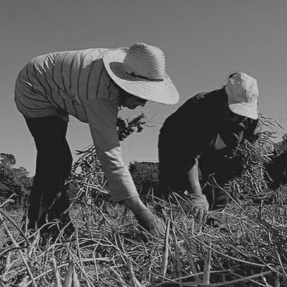

Dia do Trabalhador Rural
25 de maio
Origem do Dia Nacional do Trabalhador Rural
A comemoração do Dia do Trabalhador e Trabalhadora Rural foi instituída no Decreto de Lei nº 4.338, de 1º de Maio de 1964.
No dia 25 de Maio de 1963, morria o deputado federal Fernando Ferrari, um dos políticos mais engajados na luta dos trabalhadores rurais por seus direitos e questões sociais.
A morte de Fernando se transformou em uma data símbolo para os profissionais da categoria.
Em 1971 foi instituído o Programa de Assistência ao Trabalhador Rural, com a Lei Complementar nº 11, que ficou conhecida como Lei Fernando Ferrari, em homenagem ao parlamentarista que lutou pelos direitos destes trabalhadores.
Homenagens para o Dia do Trabalhador Rural
"Nossas homenagens para esses homens e mulheres, cujo trabalho no campo contribui para o crescimento da economia e sustento da população das cidades! Parabéns!"
"Se existe o 'COLHER' é porque seu suor e dedicação frutificaram! Agradecemos a todos os trabalhadores rurais o cuidado com a terra".
"Tudo que chega a nossa mesa, provém de sua natureza. Mas, a sua transformação tem a ver com a sua ação. Desde o preparo da terra, o seu trabalho encerra toda sua dedicação. Na pecuária ou agricultura, mesmo sem grande estrutura, ele garante a produção".
Textos retirados do site https://www.agraer.ms.gov.br/25-de-maio-dia-do-trabalhador-rural/